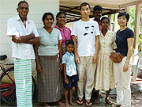
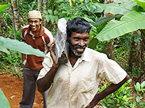
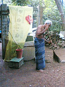
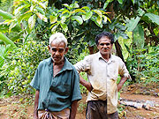
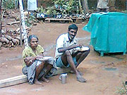
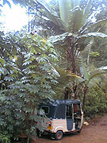
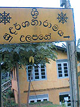

「２週間という短い間でしたが、ホストファミリーとお互いの国の文化や歴史について夜まで話し合ったり、田舎も含めた現地での生活を体験することができ、参加して本当に良かったと思います。
ありがとうございました。
しかしそれと同時に、あれほど親切な人々が貧困に耐えながらも懸命に生きている、それでも医療の問題などにより苦しんでいるという状況から目を背けられませんでした。
医師や物資の不足から、中流以上の人も十分な医療を受けられず、ましてや普通の生活さえ保障されていない人たち（低賃金で働いているタミル人の方々とも出会いました）のことを考えると胸が痛みます。
受験時代から薦められても全く検討さえしませんでしたが、今回初めて、医師としての道を考えております。
行きの飛行機で隣の席が『国境なき医師団』で１年間コロンボに滞在すると言っていたアメリカ人だったのも、その前兆だったのかもしれません。

海外で過ごした短い時間に、いつもいろいろな人に助けられてきました。
これからも多くの人にお世話になると思います。


低開発村の人々
人類はずっと戦争を続けていますが、科学史を見てみますと、そこに人類の数千年に渡る協力を垣間見ることができます。先代の発見を次世代の人が発展させていくという積み重ねであり、一人で完成させるということなどありません。
師であるティコ・ブラーエが十年以上に渡り記録した精密な観測結果を元に、弟子のケプラーが『ケプラーの法則』を発見したこともその一例です。
人類の歴史にも美しい面があります。

スリランカの人々は仏教の教えから、自分の運命は死ぬまで変わらないと信じている面があるように感じられました。
しかしホストファミリーの方は逆に、
『語学が得意だということは、将来それを活かさせばならない。人は能力と同時に使命も与えられる』
と言われました。
何を専門にするかはまだ決定しておりませんが、何らかの形で語学を活かせるような国際系の職業に就くことはほぼ間違いないでしょう。
困難にぶつかることもありますが、自分を支えてくれる多くの人のことも考えて努力していこうと思います。」

